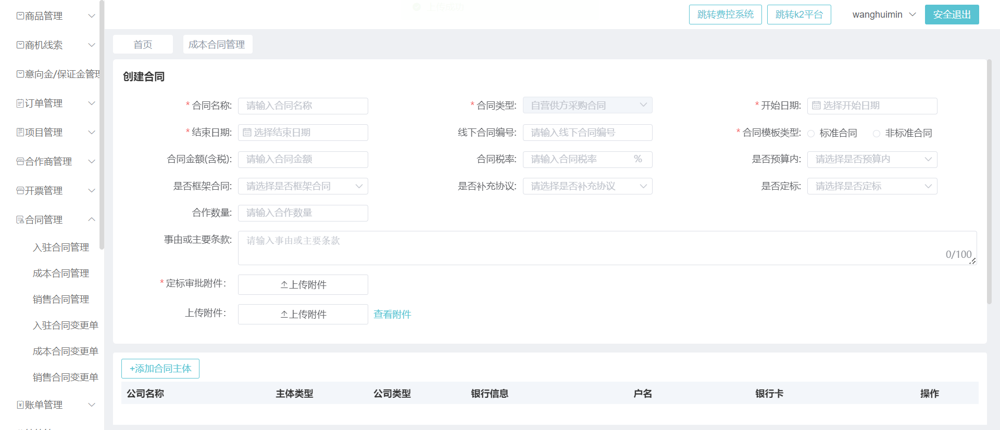
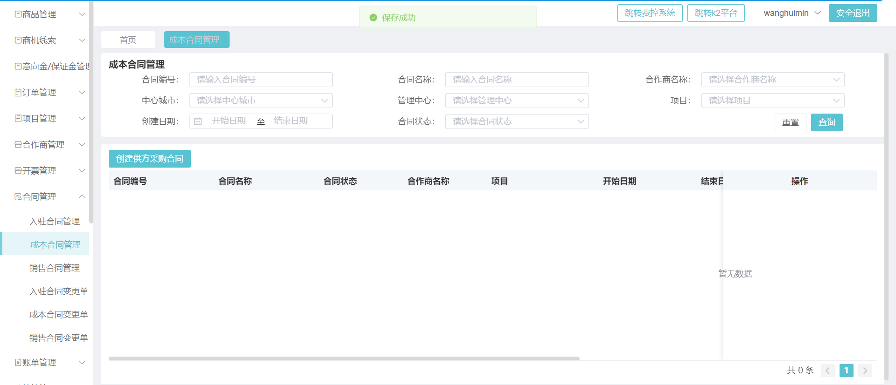

测试人员 : YU
开始时间 : 2023-08-16 18:38:08
合计耗时 : 0:00:54.580858
测试结果 : 共 2 个用例，通过 2, 通过率=100.00%
Test Results
概要{ 100.00% } 错误{ 0 } 失败{ 0 } 通过{ 2 } 所有{ 2 }
| 用例集/测试用例 | 总计 | 通过 | 失败 | 错误 | 详细 | 截图 |
| testsuit.Test_suit | 2 | 2 | 0 | 0 | 详细 | 断言或错误截图 |
test_04: 上传附件合同用例 |
pt1_1: 开始运行用例
打开浏览器
2023-08-16 18:38:10,443 INFO [root] [basetoolclass.py(Wait_element] [line:23] - 寻找等待定位元素('id', 'tab-outside')
2023-08-16 18:38:10,529 INFO [root] [basetoolclass.py(info_log] [line:97] - 切换外部登录
2023-08-16 18:38:10,531 INFO [root] [basetoolclass.py(Wait_element] [line:23] - 寻找等待定位元素('xpath', '//*[@placeholder="请输入用户名称"]')
2023-08-16 18:38:10,660 INFO [root] [basetoolclass.py(info_log] [line:97] - 输入用户名wanghuimin
2023-08-16 18:38:10,663 INFO [root] [basetoolclass.py(Wait_element] [line:23] - 寻找等待定位元素('xpath', '//*[@placeholder="请输入登录密码"]')
2023-08-16 18:38:10,759 INFO [root] [basetoolclass.py(info_log] [line:97] - 输入密码123456
2023-08-16 18:38:10,759 INFO [root] [basetoolclass.py(Wait_element] [line:23] - 寻找等待定位元素('css selector', '#pane-outside > form > div:nth-child(4) > div > button > span')
2023-08-16 18:38:10,830 INFO [root] [basetoolclass.py(Wait_element] [line:23] - 寻找等待定位元素('xpath', '//*[@id="app"]/div/div/div[1]/div/div/div/ul/div[8]/li/div/i[2]')
2023-08-16 18:38:11,809 INFO [root] [basetoolclass.py(Wait_element] [line:23] - 寻找等待定位元素('xpath', '//*[text()="成本合同管理"]')
获取下拉框元素
2023-08-16 18:38:13,133 INFO [root] [basetoolclass.py(Wait_element] [line:23] - 寻找等待定位元素('xpath', "//*[text()='创建供方采购合同']")
2023-08-16 18:38:13,755 INFO [root] [basetoolclass.py(Wait_element] [line:23] - 寻找等待定位元素('xpath', "//*[text()='查看附件']")
2023-08-16 18:38:16,880 INFO [root] [basetoolclass.py(Wait_element] [line:23] - 寻找等待定位元素('css selector', '#app > div > div > div.main-page-body.flex-col.flex1.of-h > div.main-page-content.flex-row.flex1 > div > div > div:nth-child(1) > div.g-search-box-coby > form > div:nth-child(8) > div > div > div > div > div > div > button > span')
2023-08-16 18:38:17,960 INFO [root] [basetoolclass.py(Wait_element] [line:23] - 寻找等待定位元素('xpath', "(//*[text()='选择附件'])")
调用上传文件方法成功，上传附件成功
2023-08-16 18:38:20,808 INFO [root] [basetoolclass.py(Wait_element] [line:23] - 寻找等待定位元素('xpath', "(//*[text()='上传'])")
2023-08-16 18:38:20,883 INFO [root] [basetoolclass.py(Wait_element] [line:23] - 寻找等待定位元素('xpath', "//*[text()='确定']")
2023-08-16 18:38:24,038 INFO [root] [basetoolclass.py(Wait_element] [line:23] - 寻找等待定位元素('xpath', "(//*[text()='确定'])[2]")
screenshot: 2023-08-16-18-38-24 .png
截图路径: C:\Users\86151\PycharmProjects\test_priject\dev2\screenshot
2023-08-16 18:38:24,273 INFO [root] [basetoolclass.py(info_log] [line:97] - 截图路径:C:\Users\86151\PycharmProjects\test_priject\dev2\screenshot,截图名称2023-08-16-18-38-24.png
screenshot: 20230816_18.38.24 .png
screenshot: 20230816_18.38.24 .png
用例运行结束
|
 | ||||
test_05: 创建成本合同 |
pt1_2: 开始运行用例
打开浏览器
2023-08-16 18:38:29,244 INFO [root] [basetoolclass.py(Wait_element] [line:23] - 寻找等待定位元素('id', 'tab-outside')
2023-08-16 18:38:29,317 INFO [root] [basetoolclass.py(info_log] [line:97] - 切换外部登录
2023-08-16 18:38:29,319 INFO [root] [basetoolclass.py(Wait_element] [line:23] - 寻找等待定位元素('xpath', '//*[@placeholder="请输入用户名称"]')
2023-08-16 18:38:29,443 INFO [root] [basetoolclass.py(info_log] [line:97] - 输入用户名wanghuimin
2023-08-16 18:38:29,443 INFO [root] [basetoolclass.py(Wait_element] [line:23] - 寻找等待定位元素('xpath', '//*[@placeholder="请输入登录密码"]')
2023-08-16 18:38:29,527 INFO [root] [basetoolclass.py(info_log] [line:97] - 输入密码123456
2023-08-16 18:38:29,533 INFO [root] [basetoolclass.py(Wait_element] [line:23] - 寻找等待定位元素('css selector', '#pane-outside > form > div:nth-child(4) > div > button > span')
2023-08-16 18:38:29,602 INFO [root] [basetoolclass.py(Wait_element] [line:23] - 寻找等待定位元素('xpath', '//*[@id="app"]/div/div/div[1]/div/div/div/ul/div[8]/li/div/i[2]')
2023-08-16 18:38:30,619 INFO [root] [basetoolclass.py(Wait_element] [line:23] - 寻找等待定位元素('xpath', '//*[text()="成本合同管理"]')
获取下拉框元素
2023-08-16 18:38:31,671 INFO [root] [basetoolclass.py(Wait_element] [line:23] - 寻找等待定位元素('xpath', "//*[text()='创建供方采购合同']")
2023-08-16 18:38:32,005 INFO [root] [basetoolclass.py(Wait_element] [line:23] - 寻找等待定位元素('xpath', '//*[@id="app"]/div/div/div[2]/div[2]/div/div/div[1]/div[1]/form/div[7]/div/div/div/div/div/div/button')
2023-08-16 18:38:33,248 INFO [root] [basetoolclass.py(Wait_element] [line:23] - 寻找等待定位元素('xpath', '//*[text()="选择附件"]')
调用上传文件方法成功，上传附件成功
2023-08-16 18:38:35,420 INFO [root] [basetoolclass.py(Wait_element] [line:23] - 寻找等待定位元素('css selector', 'body > div.el-dialog__wrapper > div > div.el-dialog__body > div > form > div > div.button-view.el-col.el-col-24 > div > div > div > button.el-button.el-button--primary.el-button--small')
2023-08-16 18:38:35,493 INFO [root] [basetoolclass.py(Wait_element] [line:23] - 寻找等待定位元素('xpath', "//*[text()='删除']")
2023-08-16 18:38:36,005 INFO [root] [basetoolclass.py(info_log] [line:97] - 获取断言元素('xpath', "//*[text()='删除']")
2023-08-16 18:38:37,023 INFO [root] [basetoolclass.py(Wait_element] [line:23] - 寻找等待定位元素('css selector', 'body > div.el-dialog__wrapper > div > div.el-dialog__footer > span > button.el-button.el-button--primary.el-button--small > span')
2023-08-16 18:38:37,593 INFO [root] [basetoolclass.py(Wait_element] [line:23] - 寻找等待定位元素('xpath', "//*[text()='查看附件']")
2023-08-16 18:38:37,614 INFO [root] [basetoolclass.py(Wait_element] [line:23] - 寻找等待定位元素('css selector', '#app > div > div > div.main-page-body.flex-col.flex1.of-h > div.main-page-content.flex-row.flex1 > div > div > div:nth-child(1) > div.g-search-box-coby > form > div:nth-child(8) > div > div > div > div > div > div > button > span')
2023-08-16 18:38:38,705 INFO [root] [basetoolclass.py(Wait_element] [line:23] - 寻找等待定位元素('xpath', '(//*[@class="el-button upload-button el-button--primary el-button--small"])[2]')
调用上传文件方法成功，上传附件成功
2023-08-16 18:38:41,304 INFO [root] [basetoolclass.py(Wait_element] [line:23] - 寻找等待定位元素('xpath', "(//*[text()='上传'])")
2023-08-16 18:38:44,538 INFO [root] [basetoolclass.py(Wait_element] [line:23] - 寻找等待定位元素('xpath', "(//*[text()='上传'])[2]")
2023-08-16 18:38:44,868 INFO [root] [basetoolclass.py(Wait_element] [line:23] - 寻找等待定位元素('xpath', "//*[text()='确定']")
2023-08-16 18:38:48,038 INFO [root] [basetoolclass.py(Wait_element] [line:23] - 寻找等待定位元素('xpath', "(//*[text()='确定'])[2]")
screenshot: 2023-08-16-18-38-48 .png
截图路径: C:\Users\86151\PycharmProjects\test_priject\dev2\screenshot
2023-08-16 18:38:48,273 INFO [root] [basetoolclass.py(info_log] [line:97] - 截图路径:C:\Users\86151\PycharmProjects\test_priject\dev2\screenshot,截图名称2023-08-16-18-38-48.png
screenshot: 20230816_18.38.48 .png
2023-08-16 18:38:48,413 INFO [root] [basetoolclass.py(Wait_element] [line:23] - 寻找等待定位元素('xpath', '//*[@placeholder="请输入合同名称"]')
2023-08-16 18:38:48,643 INFO [root] [basetoolclass.py(Wait_element] [line:23] - 寻找等待定位元素('xpath', '//*[@placeholder="选择开始日期"]')
2023-08-16 18:38:48,758 INFO [root] [basetoolclass.py(Wait_element] [line:23] - 寻找等待定位元素('xpath', '//*[@placeholder="选择结束日期"]')
2023-08-16 18:38:48,879 INFO [root] [basetoolclass.py(Wait_element] [line:23] - 寻找等待定位元素('xpath', '//*[@id="app"]/div/div/div[2]/div[1]/div[1]')
2023-08-16 18:38:48,947 INFO [root] [basetoolclass.py(Wait_element] [line:23] - 寻找等待定位元素('xpath', '//*[@class="el-radio__inner"][1]')
2023-08-16 18:38:49,087 INFO [root] [basetoolclass.py(Wait_element] [line:23] - 寻找等待定位元素('xpath', '//*[text()="+添加合同主体"]')
2023-08-16 18:38:49,451 INFO [root] [basetoolclass.py(Wait_element] [line:23] - 寻找等待定位元素('xpath', '//*[@placeholder="请选择主体类型"]')
获取下拉框元素
2023-08-16 18:38:50,335 INFO [root] [basetoolclass.py(Wait_element] [line:23] - 寻找等待定位元素('xpath', '//*[text()="我方公司"]')
2023-08-16 18:38:50,719 INFO [root] [basetoolclass.py(Wait_element] [line:23] - 寻找等待定位元素('xpath', '//*[@placeholder="请选择公司名称"]')
获取下拉框元素
2023-08-16 18:38:51,167 INFO [root] [basetoolclass.py(Wait_element] [line:23] - 寻找等待定位元素('xpath', '//*[text()="北京物业长沙分公司"]')
2023-08-16 18:38:51,585 INFO [root] [basetoolclass.py(Wait_element] [line:23] - 寻找等待定位元素('css selector', '#app > div > div > div.main-page-body.flex-col.flex1.of-h > div.main-page-content.flex-row.flex1 > div > div > div.el-drawer__wrapper > div > div > section > div > div.footer-btn > button.el-button.el-button--primary.el-button--small > span')
获取下拉框元素
2023-08-16 18:38:51,948 INFO [root] [basetoolclass.py(Wait_element] [line:23] - 寻找等待定位元素('xpath', '//*[text()="+添加合同主体"]')
2023-08-16 18:38:52,327 INFO [root] [basetoolclass.py(Wait_element] [line:23] - 寻找等待定位元素('xpath', '//*[@placeholder="请选择主体类型"]')
获取下拉框元素
2023-08-16 18:38:53,145 INFO [root] [basetoolclass.py(Wait_element] [line:23] - 寻找等待定位元素('xpath', '//*[text()="对方公司"]')
2023-08-16 18:38:53,605 INFO [root] [basetoolclass.py(Wait_element] [line:23] - 寻找等待定位元素('xpath', '//*[@placeholder="请选择公司名称"]')
获取下拉框元素
2023-08-16 18:38:53,982 INFO [root] [basetoolclass.py(Wait_element] [line:23] - 寻找等待定位元素('xpath', "//*[text()='长沙数据统计']")
2023-08-16 18:38:54,326 INFO [root] [basetoolclass.py(Wait_element] [line:23] - 寻找等待定位元素('css selector', '#app > div > div > div.main-page-body.flex-col.flex1.of-h > div.main-page-content.flex-row.flex1 > div > div > div.el-drawer__wrapper > div > div > section > div > div.footer-btn > button.el-button.el-button--primary.el-button--small > span')
获取下拉框元素
2023-08-16 18:38:55,673 INFO [root] [basetoolclass.py(Wait_element] [line:23] - 寻找等待定位元素('css selector', '#app > div > div > div.main-page-body.flex-col.flex1.of-h > div.main-page-content.flex-row.flex1 > div > div > div:nth-child(1) > div:nth-child(2) > div.page-table.flex-col.flex1 > div > div > div.el-table__fixed-right > div.el-table__fixed-body-wrapper > table > tbody > tr:nth-child(1) > td.el-table_2_column_20.is-center.el-table__cell > div > div > div')
screenshot: 2023-08-16-18-38-56 .png
截图路径: C:\Users\86151\PycharmProjects\test_priject\dev2\screenshot
2023-08-16 18:38:56,343 INFO [root] [basetoolclass.py(info_log] [line:97] - 截图路径:C:\Users\86151\PycharmProjects\test_priject\dev2\screenshot,截图名称2023-08-16-18-38-56.png
2023-08-16 18:38:56,343 INFO [root] [basetoolclass.py(Wait_element] [line:23] - 寻找等待定位元素('xpath', '//*[@placeholder="请选择中心城市"]')
2023-08-16 18:38:56,709 INFO [root] [basetoolclass.py(Wait_element] [line:23] - 寻找等待定位元素('xpath', "//*[text()='长沙-中心城市公司']")
获取下拉框元素
2023-08-16 18:38:57,587 INFO [root] [basetoolclass.py(Wait_element] [line:23] - 寻找等待定位元素('css selector', '#app > div > div > div.main-page-body.flex-col.flex1.of-h > div.main-page-content.flex-row.flex1 > div > div > div:nth-child(1) > div:nth-child(2) > form > div:nth-child(1) > div:nth-child(2) > div > div > div > div.el-select__tags')
2023-08-16 18:38:57,963 INFO [root] [basetoolclass.py(Wait_element] [line:23] - 寻找等待定位元素('xpath', "//*[text()='C03管理中心']")
获取下拉框元素
2023-08-16 18:38:58,326 INFO [root] [basetoolclass.py(Wait_element] [line:23] - 寻找等待定位元素('css selector', '#app > div > div > div.main-page-body.flex-col.flex1.of-h > div.main-page-content.flex-row.flex1 > div > div > div:nth-child(1) > div:nth-child(2) > form > div:nth-child(1) > div:nth-child(4) > div > div > div > div.el-select__tags > input')
2023-08-16 18:38:58,673 INFO [root] [basetoolclass.py(Wait_element] [line:23] - 寻找等待定位元素('xpath', "//*[text()='（金茂服务_北京-中心城市公司_J03管理中心_中化社区）']")
获取下拉框元素
2023-08-16 18:38:59,550 INFO [root] [basetoolclass.py(Wait_element] [line:23] - 寻找等待定位元素('css selector', '#app > div > div > div.main-page-body.flex-col.flex1.of-h > div.main-page-content.flex-row.flex1 > div > div > div:nth-child(1) > div:nth-child(3) > div > button.el-button.el-button--primary.el-button--small > span')
screenshot: 20230816_18.38.59 .png
2023-08-16 18:39:00,071 INFO [root] [basetoolclass.py(Wait_element] [line:23] - 寻找等待定位元素('xpath', "//*[text()='保存成功']")
2023-08-16 18:39:00,103 INFO [root] [basetoolclass.py(info_log] [line:97] - 获取断言元素('xpath', "//*[text()='保存成功']")
screenshot: 20230816_18.39.00 .png
用例运行结束
|
 | ||||
| 总计 | 2 | 2 | 0 | 0 | 通过率：100.00% | |
{kind=link}
{kind=link}